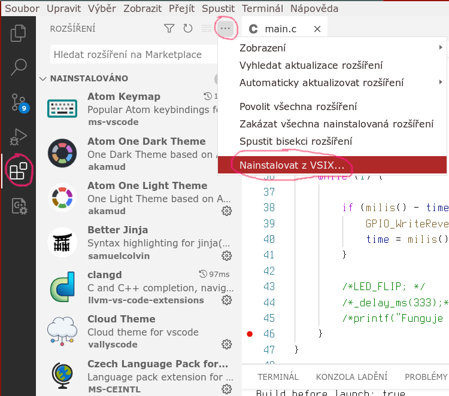

V poslední době se mi jako editor nejvíc osvědčil VSCode/Codium. Já osobně sice používáme VIm, ale ve výuce a se studenty používáme VSCode/Codium.
Visual Studio Code je brilantní open-source editor z dílny firmy Microsoft s vestavěnou podporou pro systém Git. Editor je multiplatformní, takže je jedno jestli používáte MacOS, Linux nebo (nechápu proč by to někdo nělal…) Windows.
Pokud by vám (stejně jako mně) vadilo, že Microsoft do balíčku s VSCode zabalí i telemetrii (dřív se tomu říkalo špehování), tak existuje projekt Codium, který tímto neduhem netrpí.
Oba projekty pochází ze stejných zdrojových kódů. Liší se pouze v tom, jak jsou zabaleny. Codium neobsahuje telemetrii a má marketplace nasměrovaný trošku jinam. Z toho vyplývá, že mohou nastat problémy při instalaci některých doplňků, protože na open-vsx.org nejsou všechny doplňky, které najdete na oficiálním maktetplacu a naopak. Pokud se v této situaci ocitnete a opravdu moc toužíte po onom úžasném doplňku, který na open-vsx.org prostě není, stačí ho z oficiálním maktetplacu stáhnout a v Codiu ručně nainstalovat.

Instalace¶
V Linuxu závisí instalace hodně na konkrétní distribuci. Například na Ubuntu se to prý dělá takto:
sudo apt install snapd
sudo snap install codium --classic
Nebo můžete použít například vscodium-deb-rpm-repo.
… a nebo všechno udělat růčo.
Nejjednodušší způsob instalace ve Windows je pomocí Chocolatey.
choco install vscodium
choco install vscode
Python¶
Pokud si doinstalujete doplněk
ms-python.python
(zde nebo
zde)
získáte vývojové prostředí, ve kterém vám s největší pravděpodobností nebude nic chybět.
Flask/Jinaja2¶
Dalším užitečným doplňkem je Better Jinja ( samuelcolvin.jinjahtml respektive samuelcolvin.jinjahtml ).
Zde je dobré ještě říct, že když používáte šablony Jinja pro web, chcete většinou, aby
vám fungovalo napovídání jak HTML, tak Jinja. Toho docílíte tak, že v nastavení si
přidáte do Include Languages: "jinja-html": "html"
Git¶
Git je v Codiu již integrován v základní podobě. Vše další po čem byste mohli v této oblasti toužit dostanete instalací doplňku Git Extension Pack pinage404.git-extension-pack. Ten v instaluje sadu doplňků:
- GitLens eamodio.gitlens
- Git Graph mhutchie.git-graph
- Git Project Manager felipecaputo.git-project-manager
- Git Web Links reduckted.vscode-gitweblinks
Céčko¶
V souvislosti s jazykem C stojí za zmínku alespoň tyto dva doplňky:
- C/C++ for Visual Studio Code ms-vscode.cpptools
- clangd llvm-vs-code-extensions.vscode-clangd respektive llvm-vs-code-extensions.vscode-clangd
Já používám ten druhý, ale možná si budete chtít vyzkoušet a nastavit ten první…
STM8¶
Opět stojí za zmínku dva doplňky. Já mám zkušenost s tímto:
- STM8 Debugger CL.stm8-debug
… ale jistě stojí za zmínku i toto:
- Embedded IDE CL.eide respektive CL.eide